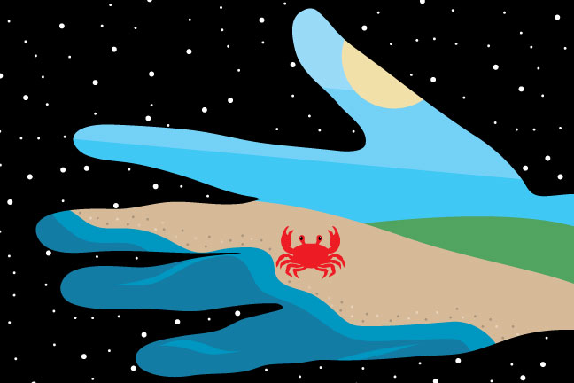

Project 1
A Visual Message for the Inhabitants of Other Celestial Bodies
A message to an alien world. This image showcases our own world. It features the shore of our ocean, the sand of the beach, and the grassy green that covers our land as well as the sky and the sun. I also thought it would be important to show a creature of Earth. I chose a crab because of the phenomenon of carcinisation, in which non crab-like crustaceans evolve to be crab-life. I figured if there is similar life on another planet, they might also have crabs. Lastly, the image of our world is shaped like a hand, the tool humans use to create. Hopefully the alien life that finds this message might have similar anatomy.